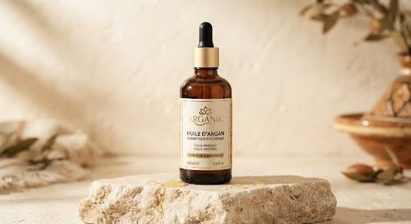
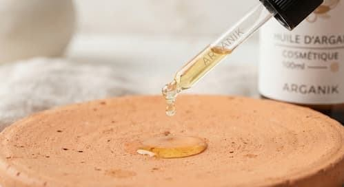
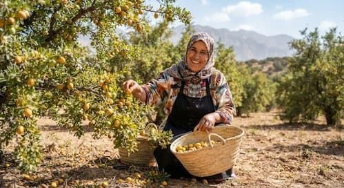
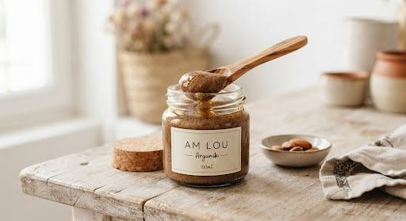

Régénération cutanée
Stimule le renouvellement cellulaire et préserve la souplesse de l'épiderme.
Livraison offerte au Maroc dès 300 MAD • Coopérative 100% solidaire et biologique certifiée

Accueil / Nos produits / Soins cosmétiques / Huile d'Argan cosmétique pure 100 ml





PASSEPORT TERROIR • LOT #ARG-2024-88
Octobre 2024 • Taroudant
Amina B. • Atelier N°3
1ère pression à froid
0,28% • Norme extra vierge
Coopérative Féminine Solidaire du Souss
Voir le certificat complet ->
CERTIFIÉ BIO ECOCERT
★★★★⯩ 4.9/5 (142 avis vérifiés)
TVA incluse • En stock
Élixir régénérant d'une pureté absolue, naturellement gorgé d'acides gras essentiels (Oméga-6 et 9) et de vitamine E protectrice. Pressé patiemment à froid par nos coopératrices, il revitalise les tissus cutanés, illumine le teint, assouplit la fibre capillaire et préserve la jeunesse de la peau.
CHOISISSEZ VOTRE FORMAT
50 ml
110 MAD100 ml
180 MAD200 ml
350 MADPartout au Maroc
Protection active
100% coopérative
Secrets de fabrication et rituel d'application
L'huile d'argan cosmétique Arganik est réputée pour sa teneur en stérols naturels et en polyphénols, des antioxydants puissants qui neutralisent les radicaux libres responsables du vieillissement cutané.
Stimule le renouvellement cellulaire et préserve la souplesse de l'épiderme.
Non comédogène, elle rééquilibre sans obstruer les pores de la peau.
Renforce le film hydrolipidique face au vent sec et aux agressions extérieures.
Composition intégrale (INCI)
Conseils d'utilisation & Rituels de beauté
Origine & Modèle coopératif éco-solidaire
Avis de notre communauté
★★★★★
J'avais peur de l'effet gras sur mon visage mixte,mais elle pénètre remarquablement vite. Ma peau au réveil est repulpée et lumineuse. L'odeur est très subtile et naturelle.
Casablanca
★★★★★
Utilisée en bain d'huile nocturne une fois par semaine. Mes boucles ont retrouvé un ressort et une brillance incomparables. On sent tout de suite la différence avec les huiles industrielles.
Lyon (France)
★★★★⯩
Le packaging est soigné, la bouteille ambrée protège bien le précieux liquide et j'apprécie profondément de savoir précisément de quelle artisane provient le flacon. Félicitations à la coopérative !
Rabat
Produits similaires & Complémentaires

ANTI-ÂGE SUPRÊM
Le joyau tenseur végétal le plus concentré en stérols et…
380 MAD
RITUEL HAMMAM
Pâte exfoliante végétale ancestrale pour libérer la peau des cellules…
95 MADTERROIR GOURMAND

Notes subtiles de noisette grillée et de pain d'épices, trésor de santé…
220 MADRECETTE ANCESTRALE

Mouture artisanale sur meule de pierre traditionnelle. Énergie…
130 MAD